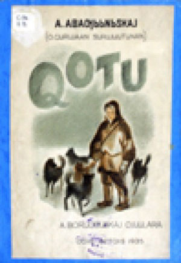
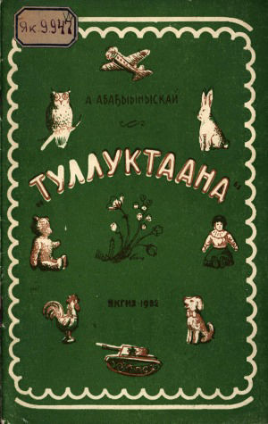

Абаҕыыныскай, Архип Георгиевич.
Хоту : [кыра саастаах оҕолорго хоһооннор] / А. Абаҕыыныскай ; (О. Гуруйаан суруйуутунан) ; А. Боруобускай ойуулара. - Москуба : ОГИС ДЕТГИС, 1935. - 14 с.

Абаҕыыныскай, Архип Георгиевич.
"Туллуктаана" : [хоһооннор] / А. Абаҕыыныскай ; [художники Ф. Копотилов, Е. Корнилов]. - Якутскай : САССР Госиздата, 1952. - 34 с. : ил.

Абаҕыыныскай, Архип Георгиевич.
Биһиги дьаасылабыт : [оскуолаҕа киириэн иннинээҕи саастаахтарга хоһооннор] / А. Абаҕыыныскай ; Б. Бордигиэнко, Б. Покуруобускай ойуулара. - Москуба : ОГИИС-ДИЕТГИИС, 1935. - 14 с.